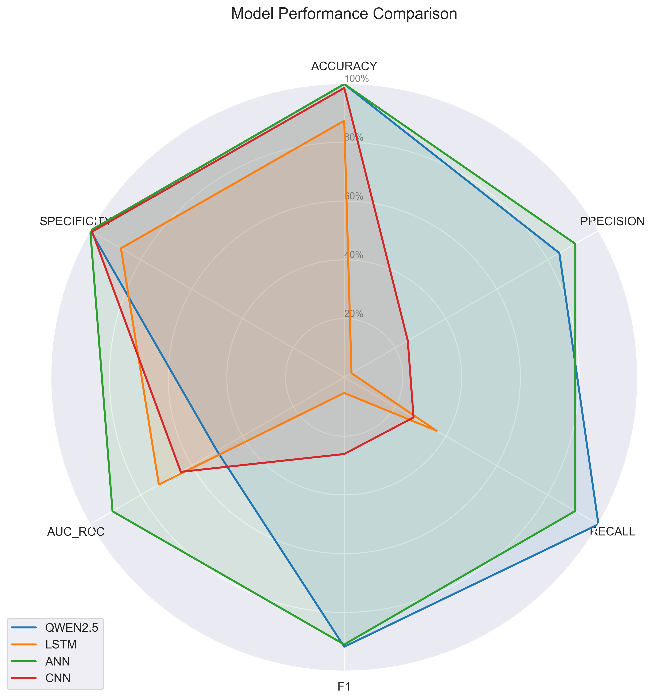
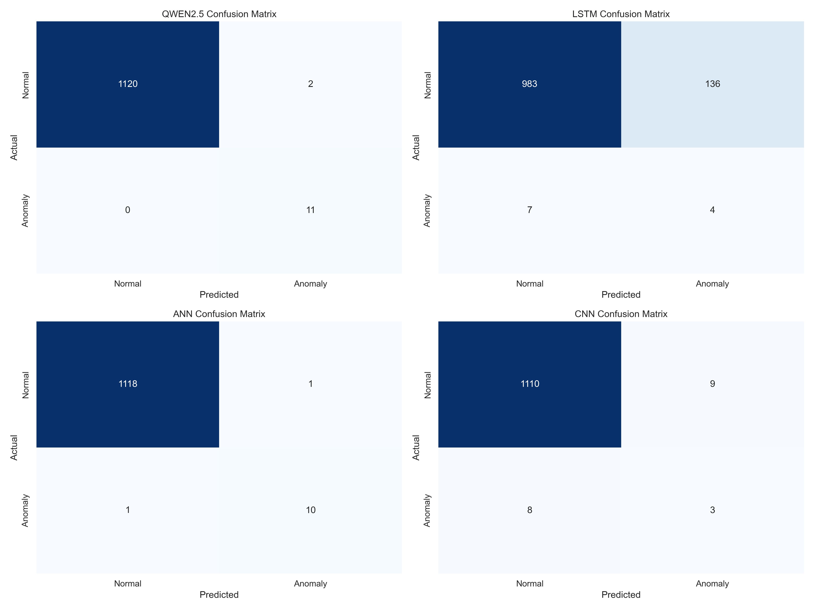
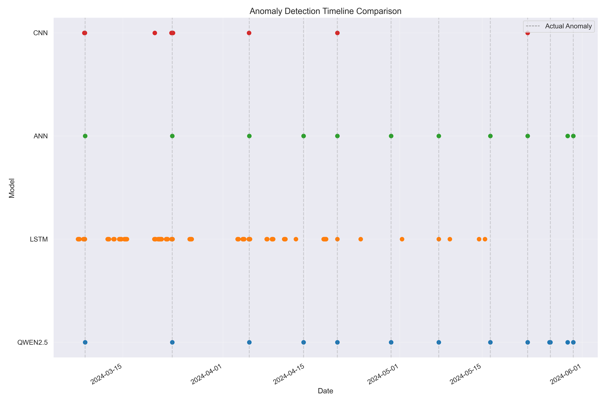
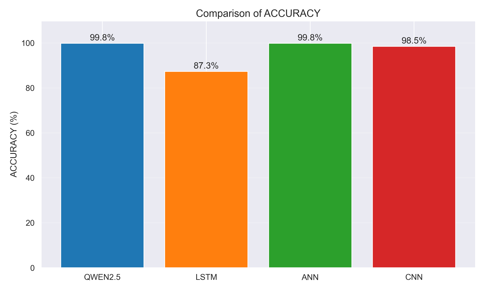
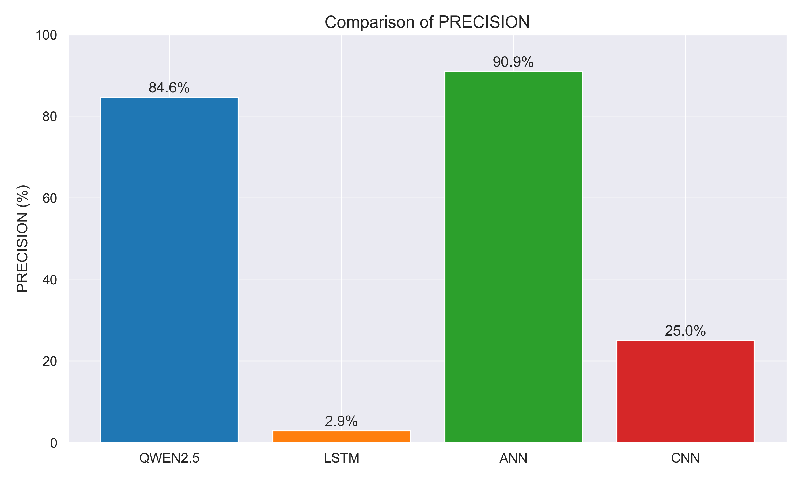
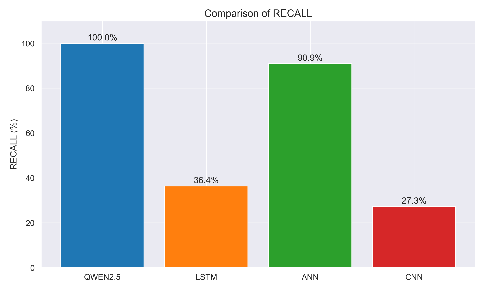
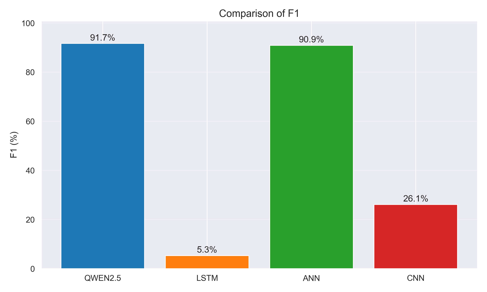
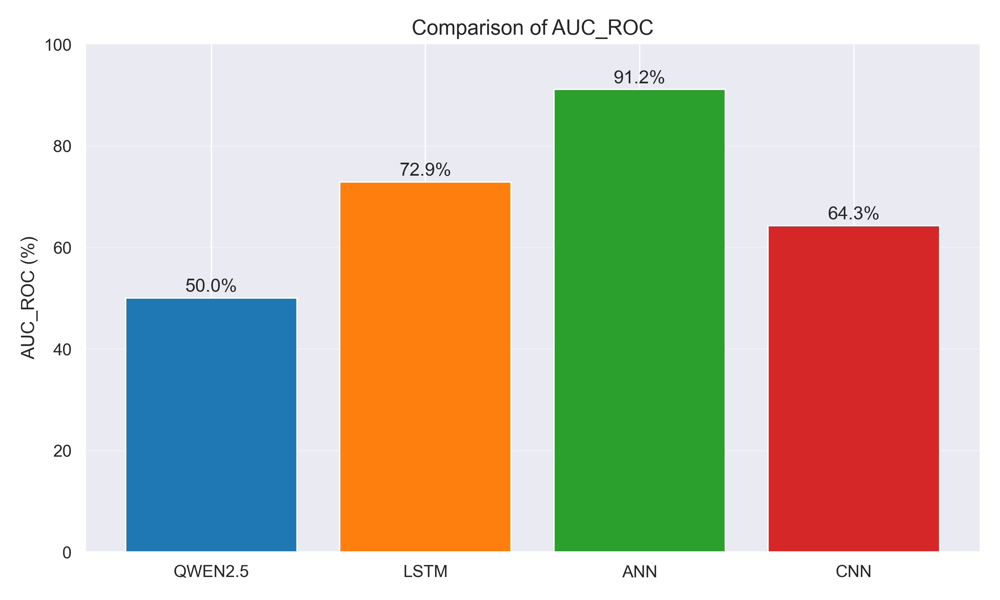

Visual Comparison
Radar Chart - Overall Model Performance
This radar chart shows all metrics for each model on a scale from 0% to 100%. A larger area indicates better overall performance.
Confusion Matrix Comparison
Confusion matrices show true positives, false positives, true negatives, and false negatives for each model.
Anomaly Detection Timeline
This timeline compares when each model detected anomalies. Vertical dashed lines represent actual anomalies.
Detailed Metric Comparisons
ACCURACY Comparison
PRECISION Comparison
RECALL Comparison
F1 Comparison
AUC_ROC Comparison
SPECIFICITY Comparison

Understanding the Metrics
- ACCURACY: The percentage of all predictions (both normal and anomaly) that were correct. While a high accuracy is generally good, it can be misleading in imbalanced datasets where anomalies are rare.
- PRECISION: When the model predicts an anomaly, how often is it correct? High precision means few false alarms.
- RECALL: What percentage of actual anomalies did the model detect? High recall means few missed anomalies.
- F1 SCORE: The harmonic mean of precision and recall, providing a single metric that balances both concerns.
- AUC-ROC: Area Under the Receiver Operating Characteristic curve, measuring the model's ability to discriminate between normal and anomaly classes across different threshold settings.
- SPECIFICITY: The proportion of actual normal samples correctly identified as normal.
For predictive maintenance, a balance between precision and recall is often critical. High precision reduces unnecessary maintenance checks, while high recall ensures fewer missed failures.